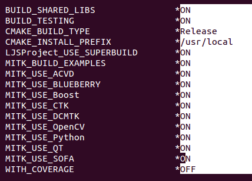
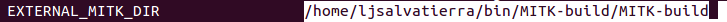
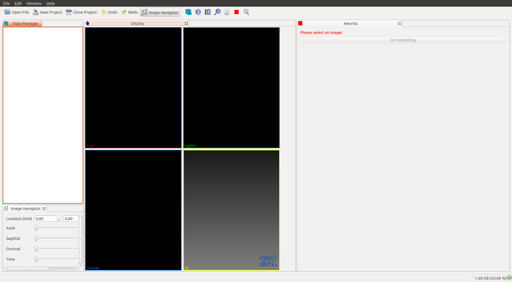
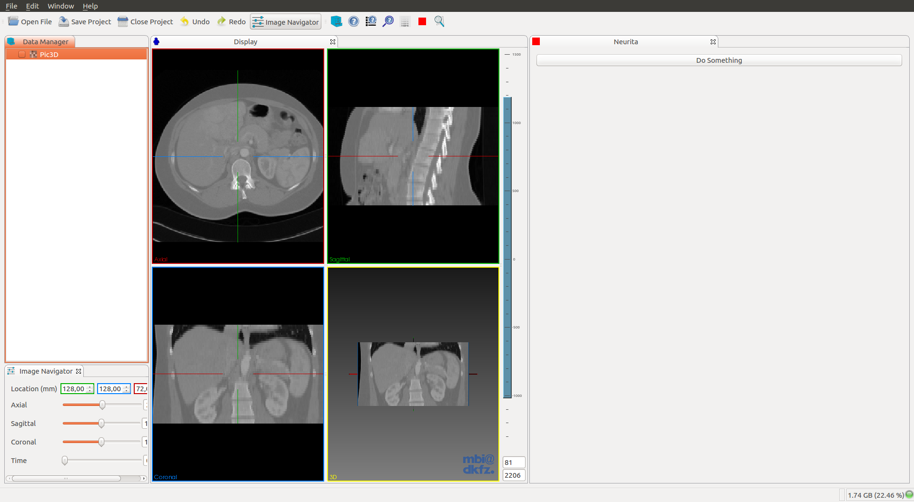
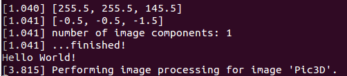

Plugins examples¶
Creating a MITK plugin¶
-
For more information, go to
MitkPluginGenerator. -
There are two ways of accomplish the same result.:
$ ./MitkPluginGenerator --plugin-symbolic-name org.mycompany.myplugin --view-name "My View"
- Creating a MITK project (recommended).:
$ ./MitkPluginGenerator --plugin-symbolic-name org.mycompany.myplugin --view-name "My View" \
--project-name "MyProject" --project-app-name "MyApp"
It is recommended to take the second approach because you only have to build MITK once. With the first approach you would have to rebuild MITK every time you make a change to your plugin/s, instead, with the second approach, each time you make a change to your plugin, you only have to compile your project.
Creating a MITK plugin¶
$ /path/to/MITK-build/bin/MitkPluginGenerator -h
$ /path/to/MITK-build/bin/MitkPluginGenerator --out-dir /output/directory \
--vendor Plugin_vendor_name --view-name "My View" --plugin-symbolic-name org.mycompany.myplugin
$ cd /output/directory && ls
org.mycompany.myplugin
$ cd org.mycompany.myplugin && ls
CMakeLists.txt documentation files.cmake manifest_headers.cmake plugin.xml resources src
- Modify MITK to build with the new plugin.:
$ cp -r ../org.mycompany.myplugin /path/to/MITK/Plugins && cd /path/to/MITK/Plugins
$ vim PluginList.cmake
# Add your plugin with the flag 'ON'.
set(MITK_PLUGINS
org.mycompany.myplugin:ON
org.blueberry.core.runtime:ON
...
- Set a new CTK Plugin in
CMakeLists.txt.:
$ cd /path/to/MITK
$ vim CMakeLists.txt
# Search the string 'set(re_ctkplugin'
/set(re_ctkplugin
- Modify it to look like this.:
# Specify which plug-ins belong to this project
macro(GetMyTargetLibraries all_target_libraries varname)
set(re_ctkplugin_mitk "^org_mitk_[a-zA-Z0-9_]+$")
set(re_ctkplugin_bb "^org_blueberry_[a-zA-Z0-9_]+$")
set(re_ctkplugin_mycompany "^org_mycompany_[a-zA-Z0-9_]+$")
set(_tmp_list)
list(APPEND _tmp_list ${all_target_libraries})
ctkMacroListFilter(_tmp_list re_ctkplugin_mitk re_ctkplugin_bb re_ctkplugin_mycompany OUTPUT_VARIABLE ${varname})
endmacro()
`set(re_ctkplugin_`**`mycompany "^org_mycompany_[a-zA-Z0-9_]+$"`**`)`
`ctkMacroListFilter(_tmp_list re_ctkplugin_mitk re_ctkplugin_bb `**`re_ctkplugin_mycompany`**` OUTPUT_VARIABLE ${varname})`
Modify your plugin¶
- Add Python module dependency to the plugin
CMakeLists.txt.
mitk_create_plugin(
EXPORT_DIRECTIVE EXAMPLE_EXPORT
EXPORTED_INCLUDE_SUFFIXES src
MODULE_DEPENDS MitkQtWidgetsExt MitkPython
)
Embed Python in the new plugin¶
Interact with Mitk Python Service.¶
When we create a plugin with MitkPluginGenerator the default view contains a button Do something. Each time we press that button, it calls the function DoImageProcessing() that prints a message in the console/terminal.
// MyView.cpp
...
// Add the Python Service header
#include <mitkPythonService.h>
...
// If you followed the instructions then you have the default plugin
// with this function
void MyView::DoImageProcessing()
{
QList<mitk::DataNode::Pointer> nodes = this->GetDataManagerSelection();
if (nodes.empty()) return;
mitk::DataNode* node = nodes.front();
if (!node)
{
// Nothing selected. Inform the user and return
QMessageBox::information( NULL, "Template", "Please load and select an image before starting image processing.");
return;
}
...
- Add this two line example to the end of the function
DoImageProcessing().:
...
message << ".";
//MITK_INFO << message.str();
// Each time we press that button will print `Hello World!` in the console/terminal
// First we interact with mitkPythonService and execute a simple Python function.
itk::SmartPointer<mitk::PythonService> _PythonService(new mitk::PythonService());
std::string result = _PythonService->Execute( "print ('Hello World!')", mitk::IPythonService::SINGLE_LINE_COMMAND );
message << "\n";
message << result << "\n";
MITK_INFO << message.str();
...
Build MITK with your new plugin¶
$ cd /path/to/MITK-build #Clean directory
$ ccmake ../MITK
# Build with the option MITK_USE_PYTHON enabled.
# Configure and enable the option MITK_USE_SYSTEM_PYTHON
# Configure and toggle the advance view.
# Modify the Python path, library path and debug path, to use Python2.7 instead of Python3.4 or Python3.4m.
# Configure again and generate.
$ make
# The last command will take several hours.
Creating a MITK project¶
$ mkdir MITK-projects && cd MITK-projects
$ /path/to/MitkPluginGenerator -h
$ /path/to/MitkPluginGenerator --plugin-symbolic-name org.mycompany.myplugin \
--view-name "My View" --project-name "MyProject" --project-app-name "MyApp"
$ cd MyProject && ls
Apps build CMake CMakeExternals CMakeLists.txt LICENSE.txt Plugins SuperBuild.cmake
Modify your project/plugin¶
$ cd Plugins/org.mycompany.myplugin/src/internal && ls
org_mycompany_myplugin_Activator.cpp org_mycompany_myplugin_Activator.h MyViewControls.ui MyView.cpp MyView.h
$ vim MyView.cpp
-
Embed Python in the new plugin. This part is shared between the two approaches.
-
Add Python module dependency to the plugin
CMakeLists.txt.
$ vim /path/to/MyProject/Plugins/org.mycompany.myplugin/CMakeLists.txt
project(org_mycompany_myplugin)
mitk_create_plugin(
EXPORT_DIRECTIVE MYPLUGIN_EXPORT
EXPORTED_INCLUDE_SUFFIXES src
MODULE_DEPENDS MitkQtWidgetsExt MitkPython
)
Build your new project¶
$ cd /path/to/MyProject
$ mkdir build && cd build
$ ccmake ..

Press 't' to toggle advanced mode and specify the EXTERNAL_MITK_DIR

Configure and look if there are any modules left
- For example.:
- MITK_BUILD_ALL_PLUGINS ON
- MITK_VTK_DIR /path/to/MITK-build/ep/share/vtk-6.2
- MITK_OpenCV_DIR /path/to/MITK-build/ep/src/OpenCV-build
- …
Test it!¶
- Open the
MitkWorkbench:
$ /path/to/MITK-build/bin/MitkWorkbench
- Or open your Project Launcher:
$ /path/to/MyProject/build/MyProject-build/bin/MyApp
- Open your plugin view:

- Open a new image to be able to press the button
Do something:

- You should see this when pressing the button
Do something:

So what do you think? Did I miss something? Is any part unclear? Leave your comments below.